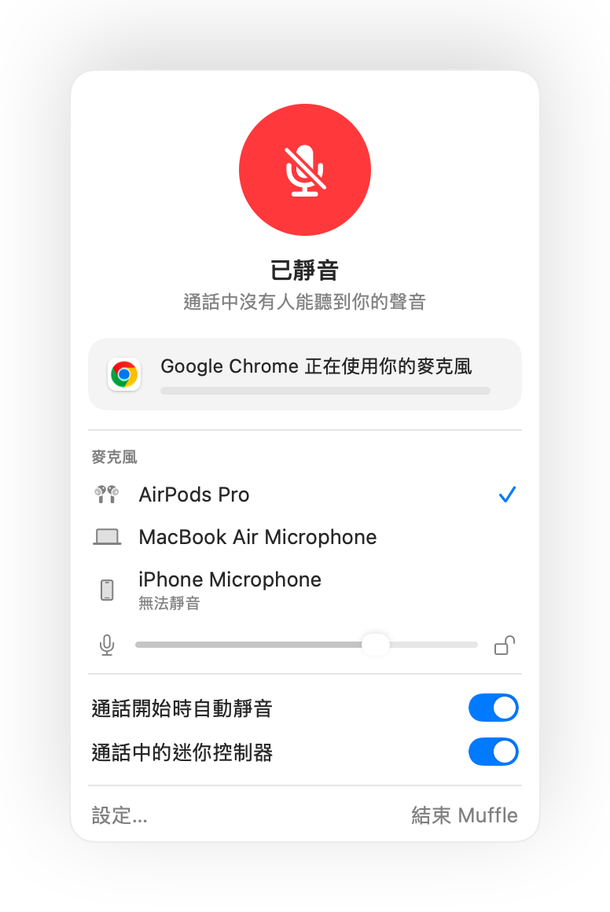

Mac 上 AirPods 靜音沒反應？解決方法看這裡
macOS 允許你透過按壓 AirPods 耳機柄來將通話靜音，但前提是通話 App 必須支援此功能。許多 App 並不支援，包括 Chrome 及其中的網頁通話。當你按壓時，只會聽到短促的錯誤提示音、看到「無法控制麥克風」訊息，而通話對方依然能聽見你的聲音。
Muffle 為所有 App 補足了這項支援。它能接收按壓動作、將 Mac 的麥克風靜音，並播放正常的靜音提示音。
免費試用 Muffle 3 天即將在 Mac App Store 推出
讓按壓 AirPods 即可在任何 App 中靜音
- 安裝 Muffle 並允許取用麥克風。macOS 只會將按壓動作傳遞給可以使用麥克風的 App。
- 確認「Muffle 設定」中的「按壓 AirPods 即可切換靜音」已開啟。
- 加入通話。按壓動作僅在有 App 正在使用麥克風時才會觸發靜音。
- 按壓耳機柄一次即可靜音，再按一次即可取消靜音。

- 在通話之外，按壓耳機柄仍可照常播放和暫停音樂。
- 如果你的 AirPods 使用不同的按壓方式來控制通話，請前往「系統設定」檢查 AirPods 設定。
常見問題
為什麼在 Mac 上按壓 AirPods 時會發出錯誤提示音？
因為你正在通話的 App 不支援 AirPods 靜音按壓動作，所以 macOS 拒絕了此操作。只要執行 Muffle，按壓動作就會改為直接將麥克風靜音。
哪些 AirPods 機型支援靜音按壓？
AirPods Pro、AirPods 第 3 代及後續機型、AirPods Max，以及支援通話控制的 Beats 機型。